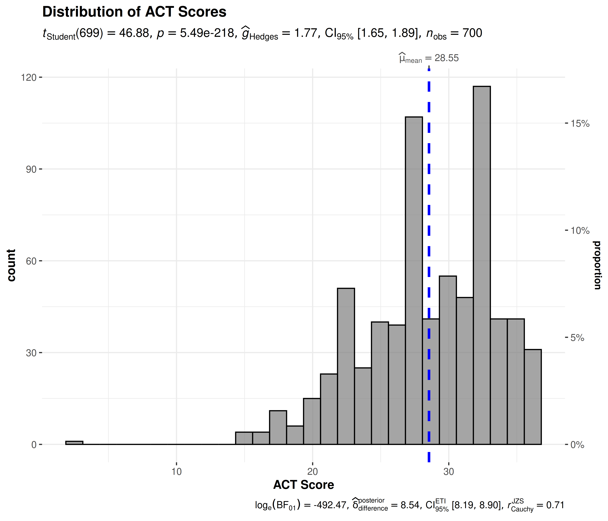
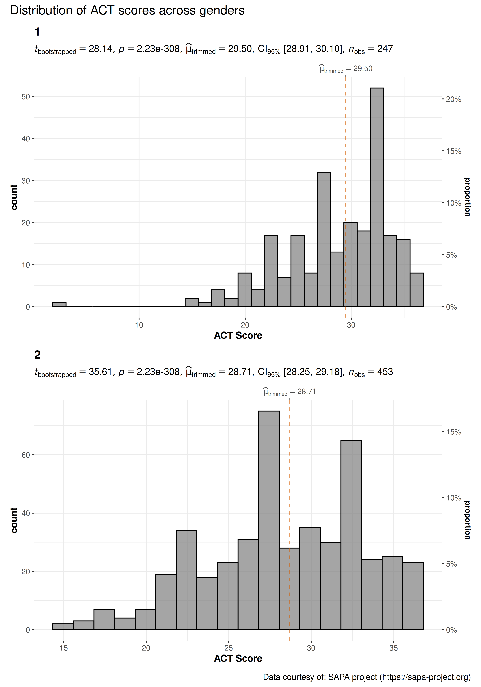
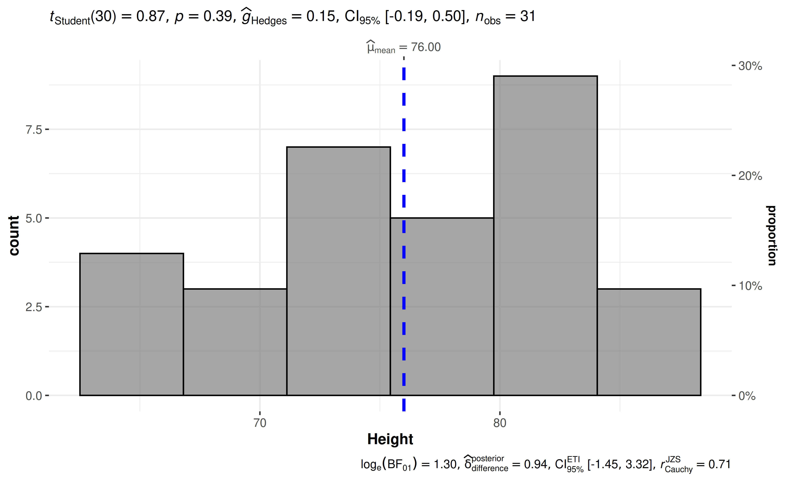

You can cite this package/vignette as:
To cite package 'ggstatsplot' in publications use:
Patil, I. (2021). Visualizations with statistical details: The
'ggstatsplot' approach. Journal of Open Source Software, 6(61), 3167,
doi:10.21105/joss.03167
A BibTeX entry for LaTeX users is
@Article{,
doi = {10.21105/joss.03167},
url = {https://doi.org/10.21105/joss.03167},
year = {2021},
publisher = {{The Open Journal}},
volume = {6},
number = {61},
pages = {3167},
author = {Indrajeet Patil},
title = {{Visualizations with statistical details: The {'ggstatsplot'} approach}},
journal = {{Journal of Open Source Software}},
}Lifecycle: 
The function gghistostats can be used for data
exploration and to provide an easy way to make
publication-ready histograms with appropriate and
selected statistical details embedded in the plot itself. In this
vignette we will explore several examples of how to use it.
Some instances where you would want to use
gghistostats-
- to inspect distribution of a continuous variable
- to test if the mean of a sample variable is different from a specified value (population parameter)
Statistical analysis with gghistostats
Let’s begin with a very simple example from the psych
package (psych::sat.act), a sample of 700 self-reported
scores on the SAT Verbal, SAT Quantitative and ACT tests. ACT composite
scores may range from 1 - 36. National norms have a mean of 20.
## loading needed libraries
library(psych)
## looking at the structure of the data using glimpse
dplyr::glimpse(psych::sat.act)
#> Rows: 700
#> Columns: 6
#> $ gender <int> 2, 2, 2, 1, 1, 1, 2, 1, 2, 2, 1, 2, 1, 2, 2, 2, 2, 2, 1, 2, …
#> $ education <int> 3, 3, 3, 4, 2, 5, 5, 3, 4, 5, 3, 4, 4, 4, 3, 4, 3, 4, 4, 4, …
#> $ age <int> 19, 23, 20, 27, 33, 26, 30, 19, 23, 40, 23, 34, 32, 41, 20, …
#> $ ACT <int> 24, 35, 21, 26, 31, 28, 36, 22, 22, 35, 32, 29, 21, 35, 27, …
#> $ SATV <int> 500, 600, 480, 550, 600, 640, 610, 520, 400, 730, 760, 710, …
#> $ SATQ <int> 500, 500, 470, 520, 550, 640, 500, 560, 600, 800, 710, 600, …By default, gghistostats chooses a binwidth of
(max(x) - min(x)) / sqrt(N). You should always check this
value and explore multiple widths (via the binwidth
argument) to find the best to illustrate the stories in your data since
histograms are sensitive to binwidth. If you want a simple histogram
without any statistical details, set
results.subtitle = FALSE (and
centrality.plotting = FALSE to also remove the centrality
line).
Let’s test the hypothesis that our sample mean is the same as our
national population mean of 20 using a parametric one sample
t-test (the default type = "parametric").
gghistostats(
data = psych::sat.act, ## data from which variable is to be taken
x = ACT, ## numeric variable
xlab = "ACT Score", ## x-axis label
title = "Distribution of ACT Scores", ## title for the plot
test.value = 20, ## test value
caption = "Data courtesy of: SAPA project (https://sapa-project.org)"
)
gghistostats also computed Bayes Factors to quantify the
likelihood of the research (BF10) and the
null hypothesis (BF01). In our current example, the
Bayes Factor value provides very strong evidence (Kass
and Raftery, 1995) in favor of the research hypothesis: these ACT
scores are much higher than the national average. The natural log of the
Bayes factor of 492.5 means the odds are 7.54e+213:1 that this sample is
different.
Grouped analysis with grouped_gghistostats
What if we want to do the same analysis separately for each gender?
ggstatsplot provides a special helper function for such
instances: grouped_gghistostats. This is merely a wrapper
function around combine_plots. It applies
gghistostats across all levels of a
specified grouping variable and then combines the
individual plots into a single plot. Note that the grouping variable can
be anything: conditions in a given study, groups in a study sample,
different studies, etc.
Let’s see how we can use this function to apply
gghistostats to accomplish our task.
grouped_gghistostats(
## arguments relevant for gghistostats
data = psych::sat.act,
x = ACT, ## same outcome variable
xlab = "ACT Score",
grouping.var = gender, ## grouping variable males = 1, females = 2
type = "robust", ## robust test: bootstrap-t test for one-sample trimmed mean
test.value = 20, ## test value against which sample trimmed mean is to be compared
centrality.line.args = list(color = "#D55E00", linetype = "dashed"),
## arguments relevant for combine_plots
annotation.args = list(
title = "Distribution of ACT scores across genders",
caption = "Data courtesy of: SAPA project (https://sapa-project.org)"
),
plotgrid.args = list(nrow = 2L)
)
As can be seen from these plots, the mean value is much higher than the national norm. Additionally, we see the benefits of plotting this data separately for each gender. We can see the differences in distributions.
Grouped analysis with {purrr}
Although this is a quick and dirty way to explore a large amount of
data with minimal effort, it does come with an important limitation:
reduced flexibility. For example, if we wanted to add, let’s say, a
separate test.value argument for each gender, this is not
possible with grouped_gghistostats.
For cases like these, or to run separate kinds of tests (robust for some, parametric for other, while Bayesian for some other levels of the group) it would be better to use purrr.
See the associated vignette here: https://www.indrapatil.com/ggstatsplot/articles/web_only/purrr_examples.html
Summary of graphics and tests
| graphical element |
geom used |
argument for further modification |
|---|---|---|
| histogram bin | ggplot2::stat_bin() |
bin.args |
| centrality measure line | ggplot2::geom_vline() |
centrality.line.args |
The statistical tests and effect sizes carried out for each
type are listed in the function documentation: https://www.indrapatil.com/ggstatsplot/reference/gghistostats.html
Extracting statistical details
All statistical details shown in the plot are also available as data
frames, which can be extracted with extract_stats(). The
returned list contains results from the test in the subtitle
(subtitle_data) and the Bayesian test in the caption
(caption_data).
p <- gghistostats(psych::sat.act, ACT, test.value = 20)
extract_stats(p)$subtitle_data
#> # A tibble: 1 × 15
#> mu statistic df.error p.value method alternative effectsize
#> <dbl> <dbl> <dbl> <dbl> <chr> <chr> <chr>
#> 1 20 46.9 699 5.49e-218 One Sample t-test two.sided Hedges' g
#> estimate conf.level conf.low conf.high conf.method conf.distribution n.obs
#> <dbl> <dbl> <dbl> <dbl> <chr> <chr> <int>
#> 1 1.77 0.95 1.65 1.89 ncp t 700
#> expression
#> <list>
#> 1 <language>For grouped_gghistostats() plots,
extract_stats() returns one such list for each level of the
grouping variable.
Reporting
If you wish to include statistical analysis results in a publication/report, the ideal reporting practice will be a hybrid of two approaches:
the ggstatsplot approach, where the plot contains both the visual and numerical summaries about a statistical model, and
the standard narrative approach, which provides interpretive context for the reported statistics.
For example, let’s see the following example:
gghistostats(trees, Height, test.value = 75)
The narrative context (assuming type = "parametric") can
complement this plot either as a figure caption or in the main text-
Student’s t-test revealed that, across 31 felled black cherry trees, although the height was higher than expected height of 75 ft., this effect was not statistically significant. The effect size was small, as per Cohen’s (1988) conventions. The Bayes Factor for the same analysis revealed that the data were 3.67 times more probable under the null hypothesis as compared to the alternative hypothesis. This can be considered moderate evidence (Jeffreys, 1961) in favor of the null hypothesis.
Suggestions
If you find any bugs or have any suggestions/remarks, please file an issue on GitHub: https://github.com/IndrajeetPatil/ggstatsplot/issues